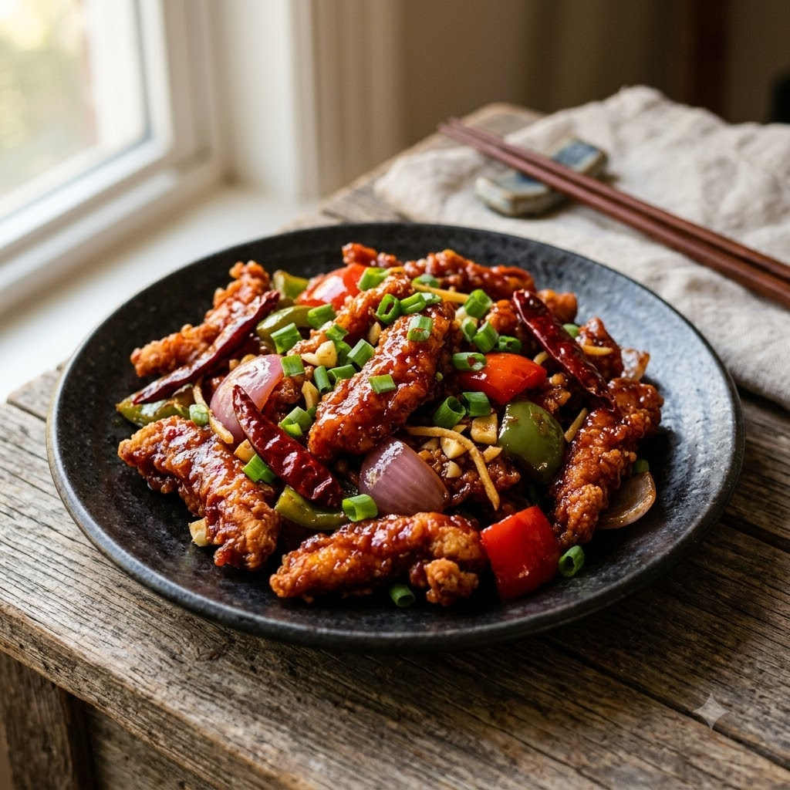

Airfryer (Fry the chicken) → Chef Magic (Toss in 200°C Fry 16 min + Toss 8 min sauce) — Serves 4
Prep ahead: Marinate the chicken pieces for at least 20 minutes for the best flavour.
Ingredients
Method
Tip: Cutting the chicken into thin strips rather than cubes is what gives Dragon Chicken its characteristic long, crispy shred.